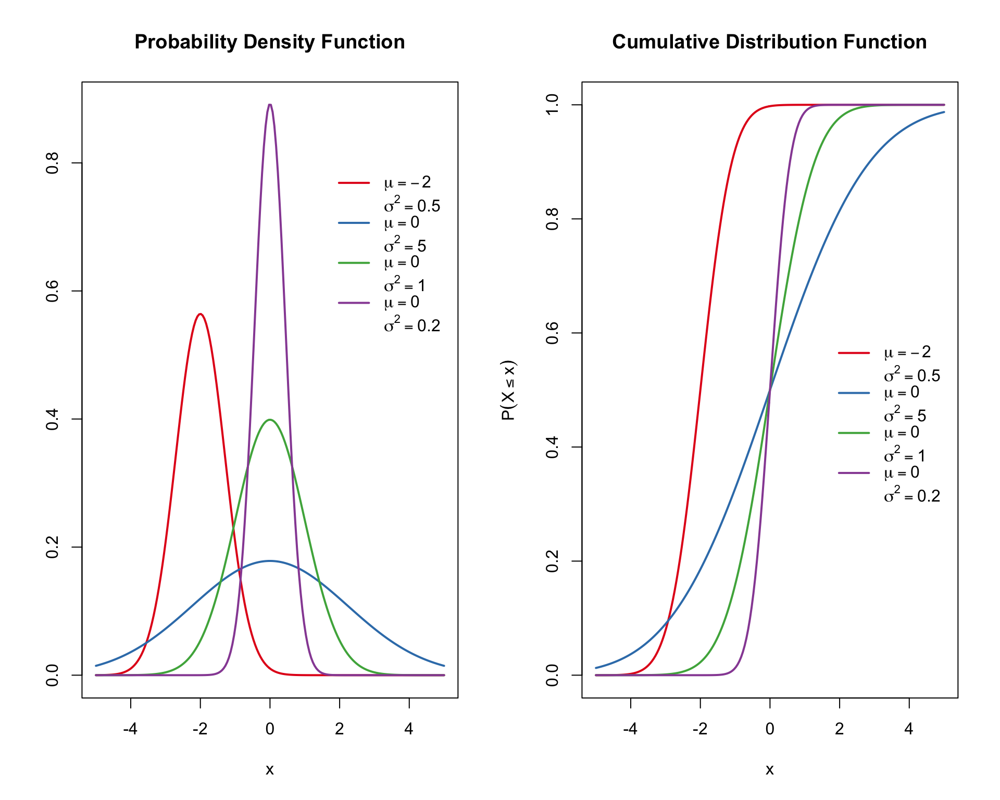
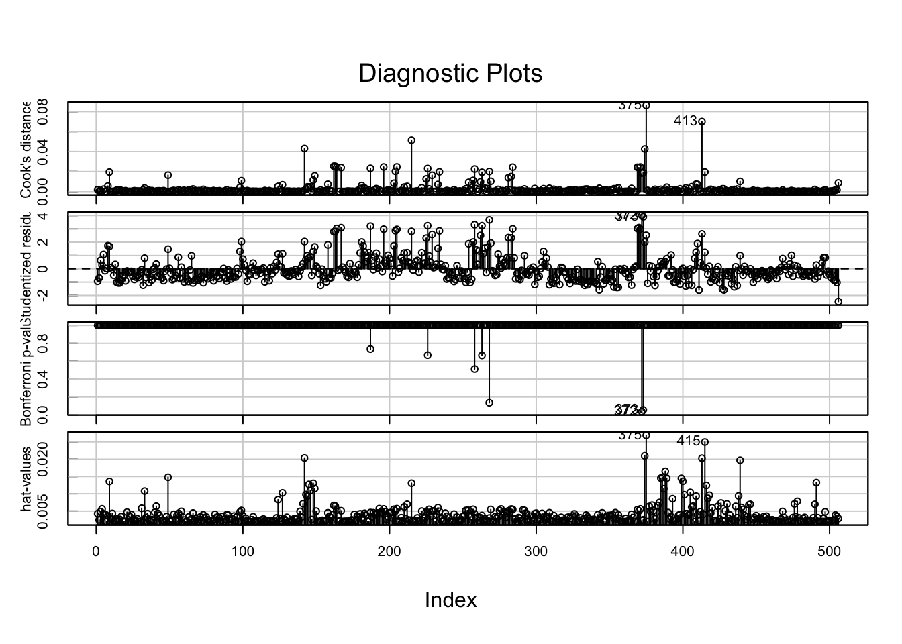

5 Probability distributions
We look at some of the basic operations associated with probability distributions.
There are a large number of probability distributions available, but we only look at a few.
To get a full list of the distributions available in R you can use the following command:
help("Distributions")For every distribution there are four commands. The commands for each distribution are prepended with a letter to indicate the functionality:
d: returns the probability density functionp: returns the cumulative density functionq: returns the inverse cumulative density function (quantiles)r: returns randomly generated numbers
5.1 Binomial distribution \(Bin(n,p)\)
- The binomial distribution is a discrete probability distribution. It describes the outcome of \(n\) independent trials in an experiment. Each trial is assumed to have only two outcomes, either success or failure. If the probability of a successful trial is \(p\), then the probability of having \(k\) successful outcomes in an experiment of \(n\) independent trials is given by the probability mass function:.
\[ { f(k,n,p) = \mbox{Pr}(X=k)=\binom{n}{k} p^k (1-p)^{n-k}, \quad k=0,1,2,...,n } \]
The cumulative distribution function can be expressed as:
\[
{
F(k;n,p) = \mbox{Pr}(X\leq k) = \sum_{i=0}^{k}\binom{n}{i} p^i (1-p)^{n-i}
}
\] 
with mean \(np\) and variance \(np(1-p)\).
Question:
Suppose there are twelve multiple choice questions in an Maths class quiz. Each question has five possible answers, and only one of them is correct. Find the probability of having four or less correct answers if a student attempts to answer every question at random.
Solution
Since only one out of five possible answers is correct, the probability of answering a question correctly by random is \(1/5=0.2\). We can find the probability of having exactly 4 correct answers by random attempts as follows.
p = 1/5
n = 12
k = 4
dbinom(k,size=n,prob=0.2)## [1] 0.1328756To find the probability of having four or less correct answers by random attempts, we apply the function dbinom with k=0,1,2,4.
prob <- NULL
for(k in 0:4){
prob <- c(prob,dbinom(k,n,p))
prob
}
prob## [1] 0.06871948 0.20615843 0.28346784 0.23622320 0.13287555sum(prob)## [1] 0.9274445# or simply
sum(dbinom(0:4,n,p))## [1] 0.9274445Alternative, we can use the cumulative probability function for the binomial distribution pbinom
pbinom(4,size=n,prob=0.2)## [1] 0.9274445Solution: the probability of four or less questions answered correctly by random in a twelve question multiple choice quiz is 92.7%.
What is the probability of 2 or 3 questions answered correctly?
sum(dbinom(2:3,n,p))## [1] 0.519691Question:
Suppose company A produced a product B which have probability 0.005 of being defective. Suppose product B is shipped in boxed containing 25 B items. What is the probability that a randomly chosen box contains exactly one defective product?
Solution: Question Rephrased: What is \(P(X = 1)\) when \(X\) has the \(Bin(25, 0.005)\) distribution? \[ P(X=1) = \binom{25}{1} 0.005^{1} (1-0.005)^{(25-1)} \]
p=0.005
choose(25,1)*p^1*(1-p)^(25-1)## [1] 0.1108317# or
dbinom(1,25,0.005)## [1] 0.1108317What is the probability that a randomly chosen box contains no more than one defective item?
Solution:
\[ P(X\leq 1) = P(X=0) + P(X=1) \]
sum(dbinom(0:1,25,p))## [1] 0.9930519# or
pbinom(1,25,0.005)## [1] 0.99305195.2 Poisson distribution \(Pois(\lambda)\)
The Poisson distribution is the probability distribution of independent event occurrences in an interval. If \(\lambda\) is the mean occurrence per interval, then the probability of having \(k\) occurrences within a given interval is the probability mass function given by:
\[ \mbox{Pr}(\mbox{$k$ events in interval}) = \frac{\lambda^k e^{-\lambda}}{k!} \]
The cumulative density function for the Poisson cumulative probability function is \[ P(X\leq x ~|~\lambda ) = \frac{e^{-\lambda} \lambda ^x}{x!}\quad \mbox{for $x=0,1,2,...$} \]

Question:
Suppose the number of individual plants of a given species we expect to find in a one meter square quadrat follows the Poisson distribution with mean \(\lambda= 10\). Find the probability of finding exactly \(12\) individuals.
Question:
If there are twelve cars crossing a bridge per minute on average, find the probability of having seventeen or more cars crossing the bridge in a particular minute.
Solutions here
5.2.1 Aproximation of Binomial as Poisson
Example
Five percent (5%) of Christmas tree light bulbs manufactured by a company are defective. The company’s Quality Control Manager is quite concerned and therefore randomly samples 100 bulbs coming off of the assembly line. Let \(X\) denote the number in the sample that are defective. What is the probability that the sample contains at most three defective bulbs?
p = 0.05
k = 3
n = 100
pbinom(k,size=n,prob=p)## [1] 0.2578387It can be demonstrated that the Binomial distribution can be approximated with the Poisson probability mass function when \(n\) is large. Using the Poisson distribution, the mean \(\lambda = np\)
lambda <- n*p
sum(dpois(0:3,lambda))## [1] 0.2650259It is important to keep in mind that the Poisson approximation to the binomial distribution works well only when \(n\) is large and \(p\) is small. In general, the approximation works well if \(n \geq 20\) and \(p\leq0.05\), or if \(n\geq 100\) and \(p\leq 0.10\).
5.3 Exponential distribution \(Exp(\lambda)\)
The exponential distribution is the probability distribution that describes the time between events in a Poisson process, i.e. a process in which events occur continuously and independently at a constant average rate.
It is a particular case of the gamma distribution. It is the continuous analogue of the geometric distribution, and it has the key property of being memoryless. In addition to being used for the analysis of Poisson processes, it is found in various other contexts.
The probability density function (pdf) of an exponential distribution as
\[ f(x;\lambda) = \lambda \exp(-\lambda x) \]
where \(\lambda>0\) is the event rate (also known as rate parameter, arrival rate, death rate, failure rate, transition rate). The exponential variable \(x \in [0,\infty)\)

- Cumulative distribution function of the exponential distribution is
\[ F(x) = \mbox{Pr}(X\leq x) = \left\{ \begin{array}{lcc} 1- e^{-\lambda x} & & x\geq 0 \\ 0 & & x < 0 \end{array} \right. \]
Mean \(\mathbb{E}(X) = 1/\lambda\), and \(\mathbb{V}ar(X) = 1/\lambda^2\).
Question:
Suppose that the amount of time one spends in a bank is exponentially distributed with mean 10 minutes, \(\lambda=1/10\).
- What is the probability that a customer will spend more than 15 minutes in the bank?
- What is the probability that a customer will spend more than 15 minutes in the bank given that he is still in the bank after 10 minutes?
Solutions
\[ P(X>15)=e^{-15\lambda}=e^{-3/2}=0.2231 \]
pexp(15,rate=1/10,lower.tail = FALSE) # or 1-pexp(15,rate=1/10)## [1] 0.2231302- \[ P(X>15 | X>10)=P(X>5)=e^{-1/2}=0.606 \]
pexp(5,rate=1/10,lower.tail = FALSE)## [1] 0.60653075.4 The Normal distribution \(\mathcal{N}(\mu,\sigma^2)\)
- The probability density function of the Normal distribution is:
\[ f(x | \mu,\sigma^2) = \frac{1}{\sqrt{2\sigma^2\pi}} e ^{-\frac{(x-\mu)^2}{2\sigma^2}}, \] where
- \(\mu\) is the mean of the distribution (also the median and the mode).
- \(\sigma\) is the standard deviation (\(\sigma>0\)).
\(\sigma^2\) is the variance.
The process to standardized Normal distribution consists in transforming the Normal variable \(N(\mu,\sigma)\) to \(N(0,1)\), i.e.
\[ Z = \frac{X-\mu}{\sigma} \sim N(0,1) \]

Question:
\(X\) is a normally distributed variable with mean \(\mu = 30\) and standard deviation \(\sigma = 4\). Find
\(P(x<40)\)
\(P(x>21)\)
\(P(30<x<35)\)
Solution:
- For \(x=40\), the standardized \(z\) is \((40-30)/4=2.5\) and hence
\[ P(X<40)=P(Z<2.5)=0.9938 \]
pnorm(2.5) # or ## [1] 0.9937903pnorm(40,mean=30,sd=4,lower.tail=TRUE)## [1] 0.9937903- \(P(x>21)\)
pnorm(21,mean=30,sd=4,lower.tail = FALSE)## [1] 0.9877755- \(P(30<x<35)\)
pnorm(35,mean=30,sd=4,lower.tail = TRUE)-pnorm(30,mean=30,sd=4,lower.tail = TRUE)## [1] 0.3943502Question:
Entry to a certain University is determined by a national test. The scores on this test are normally distributed with a mean of 500 and a standard deviation of 100. Tom wants to be admitted to this university and he knows that he must score better than at least 70% of the students who took the test. Tom takes the test and scores 585. Will he be admitted to this university?
Solution:
N = 1000
hist(rnorm(N,500,100),20,col="grey")
abline(v=585,col=2)
Is \(P(X<585)\) >70%?
pnorm(585,mean=500,sd=100)## [1] 0.8023375Tom scored better than 80.23% of the students who took the test and he will be admitted to this University.
5.5 Uniform distribution \(U(a,b)\)
- The continuous uniform distribution is the probability distribution of random number selection from the continuous interval between a and b. Its density function is defined by the following.
\[ f(x) = \left\{ \begin{aligned} \frac{1}{a-b} & \quad a \leq x \leq b\\ 0 ~~~~&\quad \mbox{elsewhere} \end{aligned}\right. \]
- The
runif()function can be used to simulate \(n\) independent uniform random variables. For example, we can generate 5 uniform random numbers on \([0,1]\) as follows:
set.seed(1234)
runif(5)## [1] 0.1137034 0.6222994 0.6092747 0.6233794 0.8609154- In order to generate uniform numbers on an interval of the form \([a,b]\), we use the arguments
min=aandmax=b. For example,
set.seed(1234)
runif(3, 1.2, 5.8)## [1] 1.723036 4.062577 4.002664gives 3 uniform numbers on \([1.2,5.8]\).
- In the next example, we will assign 100 independent uniform numbers on the interval \([1,5]\) to a vector object called
U:
set.seed(1234)
U <- runif(100, 1, 5)
hist(U)
- The density function can be calculated using
dunif()
curve(dunif(x, 1, 5), from=0, to=6)
Mean of \(U\) is \(\mathbb{E}[U]=\frac{1}{2}(a+b)\), median is \(\mathbb{Med}[U]=\frac{1}{2}(a+b)\) and Variance is \(\mathbb{Var}[U]=\frac{1}{12}(b-a)^2\).
5.5.1 Exercises
- A dice is thrown at random. What is the expectation of number on it? (Or) If x denotes the number of points on a dice, find the expectation and the variance of x.
\[ E(X) = \sum_{i=1}^6 x_iP(X=x_i) \]
\[ Var[X] = E[X]^2 - E[X^2] \]
where \(E[X^2] = \sum_{i=1}^6 x_iP(X=x_i)\).
x = 1:6
prob <- 1/6 # probability to obtain any number of the dice
E <- sum(x*rep(prob,length(x)))
E## [1] 3.5 E2 <- E^2
Ex2 <- sum(x^2*rep(prob,length(x)))
Var <- Ex2-E2
Var## [1] 2.9166675.5.2 QQ-plot
A Q-Q plot is a plot of the quantiles of two distributions against each other, or a plot based on estimates of the quantiles. The pattern of points in the plot is used to compare the two distributions.
qqnorm is used to determine if your data is close to being normally distributed. You cannot be sure that the data is normally distributed, but you can rule out if it is not normally distributed.
set.seed(1234)
require(graphics)
y <- rt(200, df = 5)
qqnorm(y);
qqline(y, col = 2)
z <- rnorm(200,mean=0,sd=1)
qqnorm(z)
qqline(z, col = 2)
To compare two distributions
set.seed(1234)
qqplot(qchisq(ppoints(500), df = 3), y,
main = expression("Q-Q plot for" ~~ {chi^2}[nu == 3]))
qqline(y, distribution = function(p) qchisq(p, df = 3),
prob = c(0.1, 0.6), col = 2) If the two distributions being compared are identical, the Q-Q plot follows the \(45º\) line \(y = x\).
If the two distributions being compared are identical, the Q-Q plot follows the \(45º\) line \(y = x\).
Probability concept
In a randomized experiment, when the number of times it is repeated increases, the relative frequency is
\[ f_n(A) = \frac{\# \mbox{times A happens}}{n} \] converges to a quantity denoted as probability \[ \mathbb{Pr}(A) = \lim_{n \rightarrow\infty} f_n(A) \] This notion of probability is not used in practice, because we would need \(n \rightarrow \infty\). But in practice we can simulate with the computer.
Example:
The relative frequency of the number of faces obtained in successive coin tosses
set.seed(1234)
prob <- NULL
for(i in 1:1000){
prob <- c(prob,mean(rbinom(i,1,0.5)))
}
plot(prob,t="l",xlab="Tosses", ylab="Probability of head",ylim=c(0,1))
abline(h=c(0,0.5,1),col=c("grey","red","grey"),lwd=c(1,3,1))